Sarapan di apartemen (dapur lengkap): roti, telur, buah, susu/yogurt dari supermarket. Untuk daging pilih yang berlabel 清真 (qīngzhēn = halal). Hotel tidak dinyatakan menyediakan sarapan halal — ini rencana sarapan mandiri.
Taman klasik Dinasti Ming: kolam, paviliun, batu karang & Dinding Naga. Datang saat buka 09:00 sebelum ramai. Senin tutup — karena itu dijadwalkan hari Sabtu.
Jalan-jalan di bazar bergaya Ming–Qing di sekitar Yu Garden: jajanan legendaris & oleh-oleh. Mode Muslim: hampir semua jajanan terkenal di sini TIDAK halal — lihat label di 'Kuliner Must Try' di bawah.
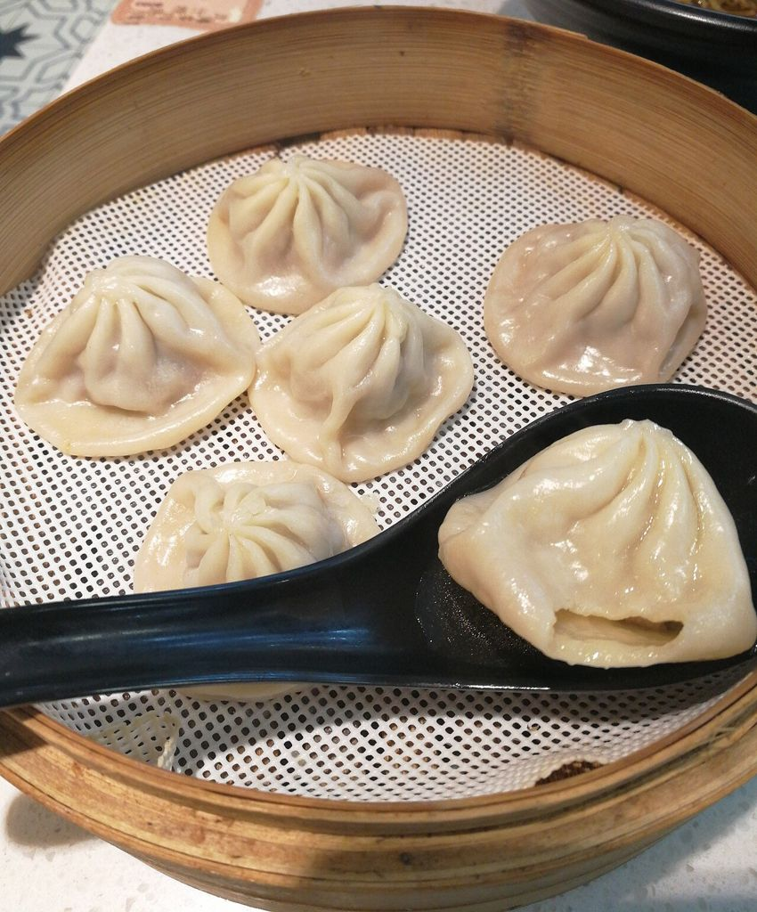
ilustrasi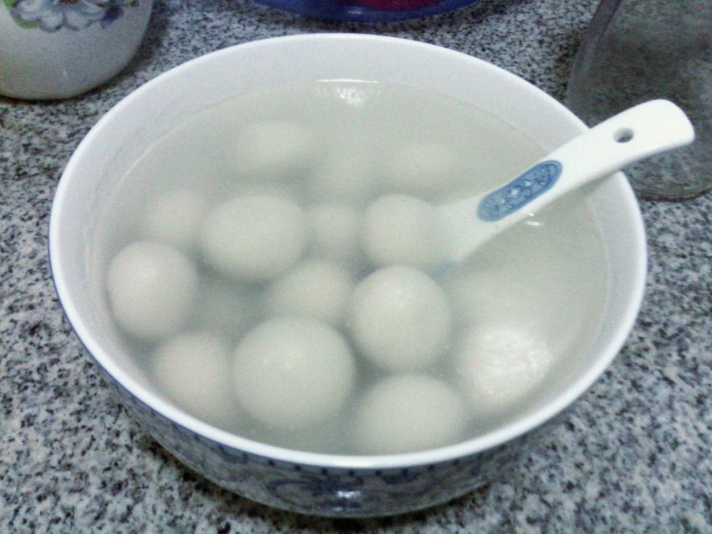
ilustrasi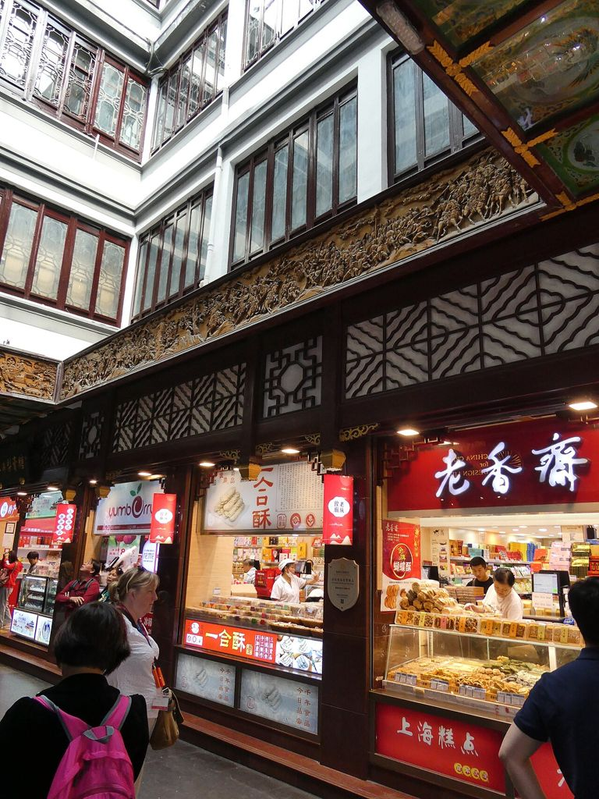
foto toko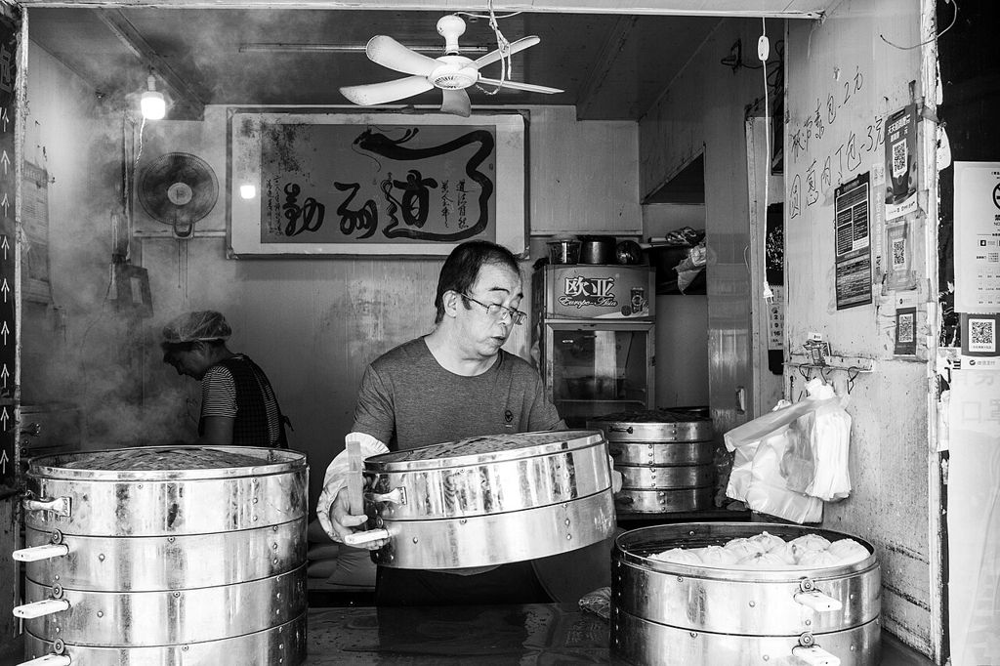
ilustrasiMasjid terbesar di Shanghai & kantor Shanghai Islamic Association (dibangun 1917, dibangun ulang 1925), perpaduan arsitektur Tiongkok & Asia Barat. Zuhur 11:40.
Restoran rumahan halal ala Barat Laut Tiongkok di gang samping Nanjing Rd E; naan segar dipanggang di dapur semi-terbuka lantai bawah.
Anak-anak istirahat / berenang di kolam indoor hotel. Salat Asar dan Magrib tepat waktu di kamar.
Restoran halal tertua di Shanghai, didirikan 1891 oleh paman maestro opera Peking Ma Lianliang. Panci tembaga berbahan arang, kaldu bening, daging kambing iris tangan, saus wijen & roti wijen. Buka kembali 2026 di lantai 10 Baodaxiang Plaza (Jiefang Daily). Disarankan reservasi: tel. +86 21 6352 9700 (Ctrip).
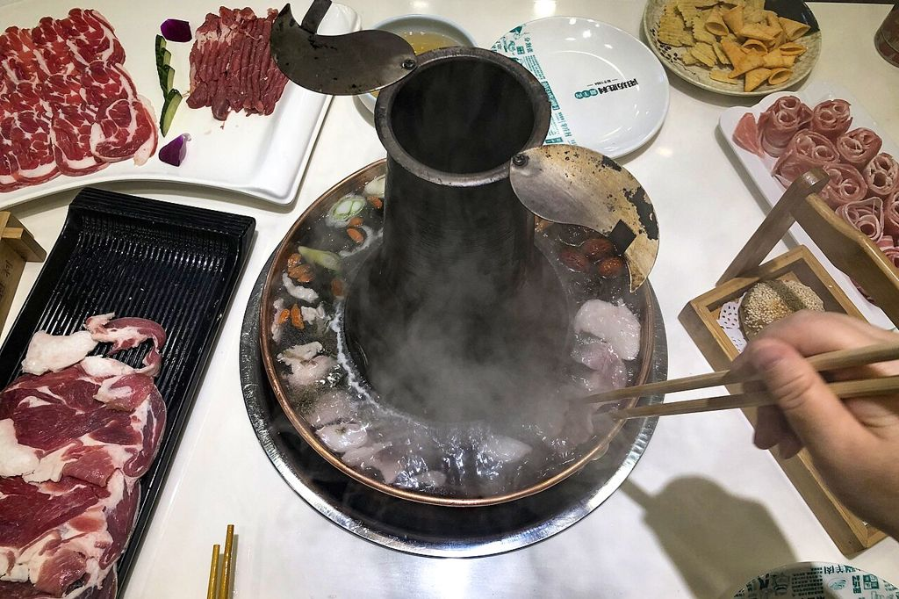
ilustrasi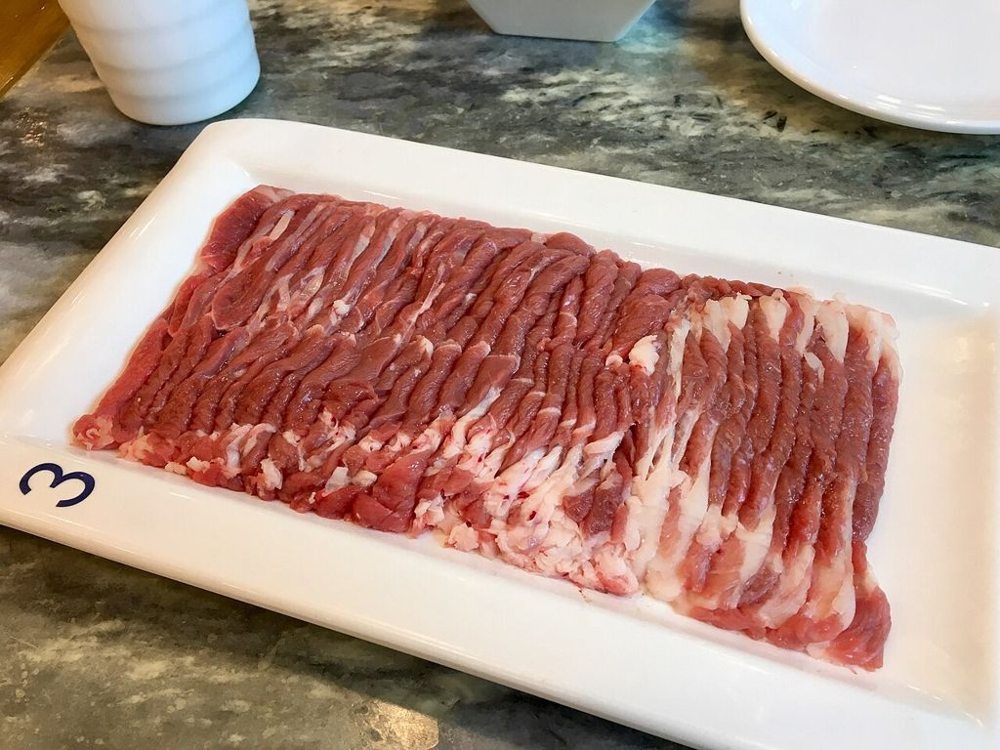
ilustrasi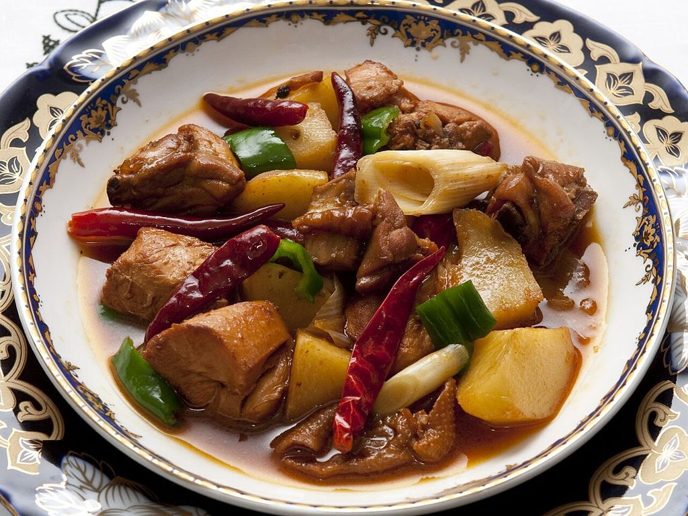
ilustrasiJalan belanja pedestrian ±1,2 km dari People's Square ke The Bund, penuh lampu neon di malam hari. Jalan kaki santai ke arah timur.
Promenade tepi Sungai Huangpu: gedung-gedung kolonial di satu sisi, skyline Lujiazui (Oriental Pearl, Shanghai Tower) di seberang.
Isya masuk 18:41; salat di kamar setelah tiba.
Sarapan di apartemen (dapur lengkap): roti, telur, buah, susu/yogurt dari supermarket. Untuk daging pilih yang berlabel 清真 (qīngzhēn = halal). Hotel tidak dinyatakan menyediakan sarapan halal — ini rencana sarapan mandiri.
Selama 9 Jul 2026 – 14 Nov 2027, gedung People's Square HANYA memamerkan pameran besar peradaban Maya/Aztek/Inka ini (lantai 1–3) dan semua pengunjung wajib membeli tiket. Seru untuk anak: patung, emas, topeng. Alternatif gratis: Museum Shanghai East (Pudong), tanpa reservasi.
Masjid berkubah emas dengan menara 25 m di Putuo, dibangun ulang 1994, fasilitas wudu lengkap. Zuhur 11:39.
Gedung restoran yang dikelola orang Lanzhou: konter mi di lantai 1, restoran di lantai atas. Masuk daftar Dianping 必吃榜 2026 (pengumuman Pemkot Putuo, 7 Jul 2026). Pilih ukuran mi: 'er xi' (二细) = ukuran sedang.
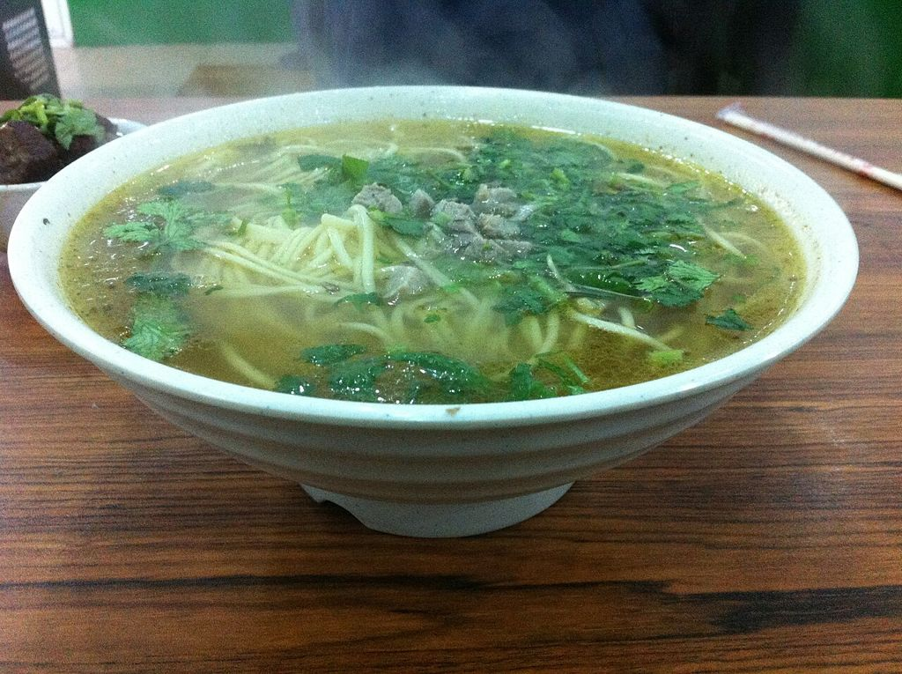
ilustrasi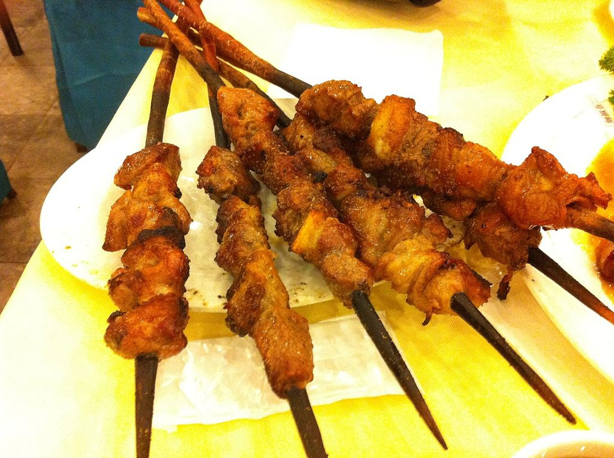
ilustrasiSalah satu museum ilmu alam terbesar di Tiongkok: dinosaurus (Mamenchisaurus), gajah purba Sungai Kuning, diorama hewan. Area penggalian fosil untuk anak 1,0–1,3 m (reservasi terpisah, gratis).
Istirahat sebentar sebelum makan malam.
Sate kambing ditusuk & dibakar di atas arang saat dipesan — pelanggan tetap memesan 'satu ikat' (10 tusuk). Satu stasiun dari Tianzifang. Di Ctrip tercatat sebagai 塔哈尔·抓饭王·缸子肉 (alamat sama: 618 Xujiahui Rd, B2 Tk-04).
Labirin gang rumah shikumen yang diubah jadi galeri, toko suvenir & kafe. Gratis. Ramai & sempit — pegang tangan anak; beberapa bar menjual alkohol.
Isya masuk 18:40; salat di kamar.
Sarapan di apartemen (dapur lengkap): roti, telur, buah, susu/yogurt dari supermarket. Untuk daging pilih yang berlabel 清真 (qīngzhēn = halal). Hotel tidak dinyatakan menyediakan sarapan halal — ini rencana sarapan mandiri. Senin: Yu Garden & Museum Shanghai tutup — hari ini fokus ke Lujiazui yang tetap buka.
Akuarium dengan terowongan bawah air 168 m: terumbu karang, laut lepas, hiu, penguin. Rute satu arah — masuk sekali saja.
Cabang Lujiazui dari jaringan restoran Xinjiang terkenal di Shanghai: Big Plate Chicken, sate kambing, samsa, teh susu Xinjiang. Lantai: sumber lama 2F No. 17–18, sumber baru 7F F01A — cek papan mal. Tel. 021-58889211.
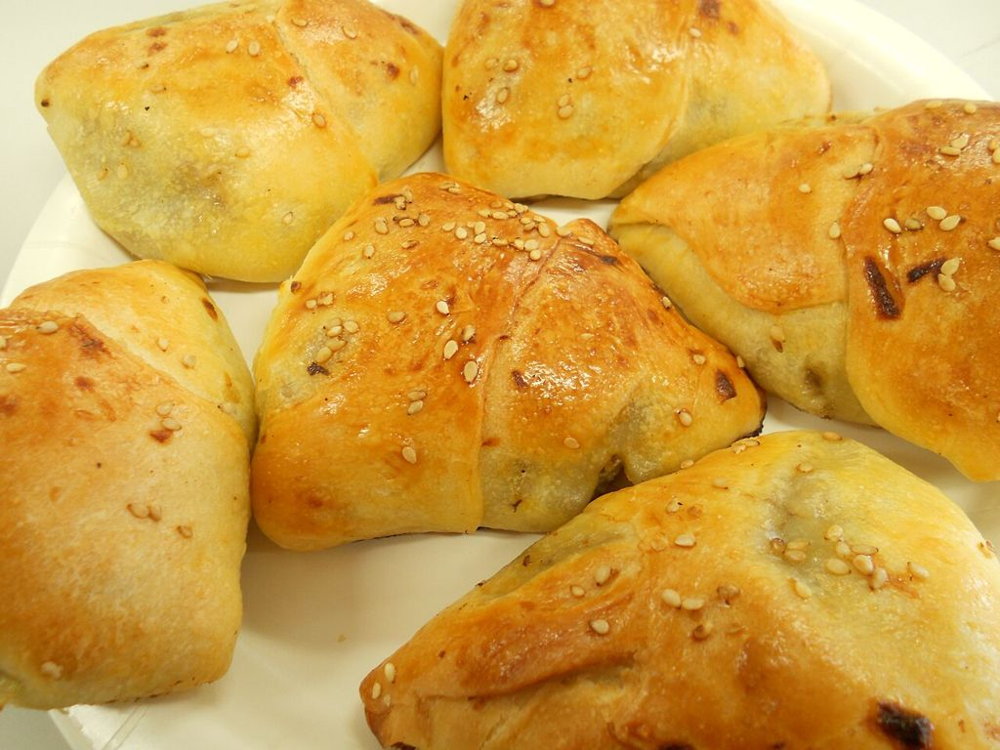
ilustrasi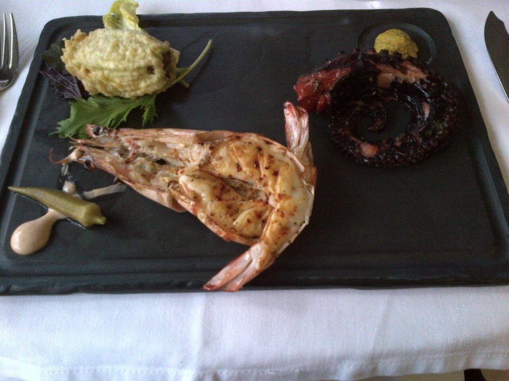
ilustrasi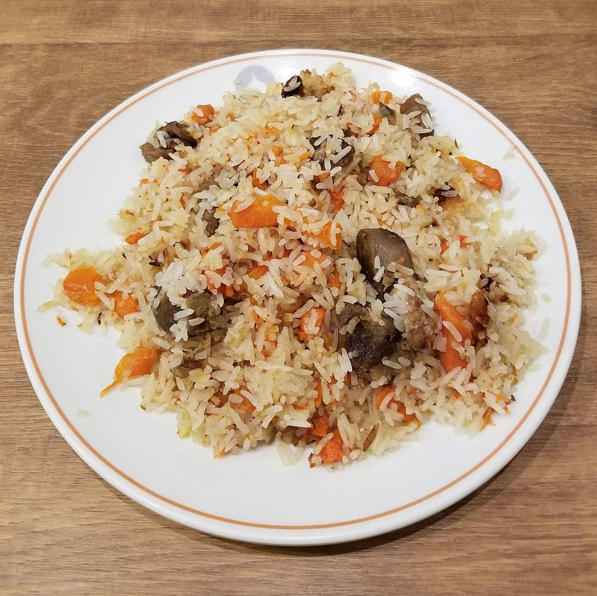
ilustrasiSatu-satunya masjid besar di timur Sungai Huangpu, dibangun ulang 1995 dengan menara 40 m; aula utama ±500 jamaah. Zuhur 11:39 (kita tiba ±12:35, masih waktu Zuhur).
Menara TV ikonik 468 m dengan bola-bola merah muda; tiket standar dua bola (dek observasi + lantai kaca).
Gedung tertinggi di Tiongkok (632 m). Dek lantai 118: pemandangan 360° Sungai Huangpu, The Bund & Lujiazui; pas untuk melihat matahari terbenam (±17:18).
Restoran Turki: grill arang, pide, sup lentil, teh Turki dalam gelas tulip, puding nasi.
Isya masuk 18:39. Bila tidak menjamak, Magrib tetap harus dikerjakan sebelum Isya masuk — sesuaikan dengan keyakinan.